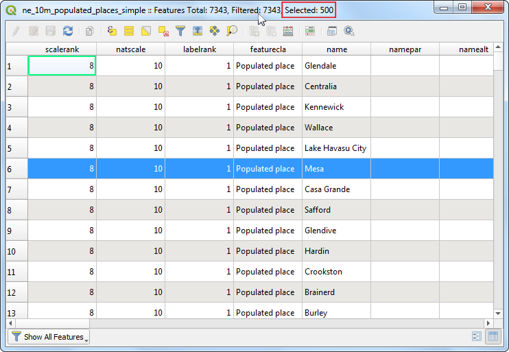
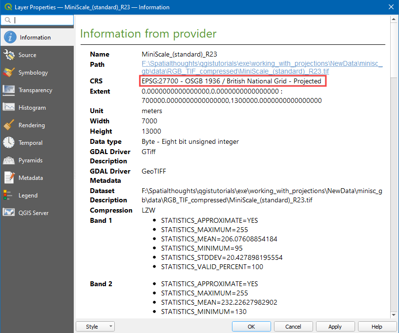

Delo s podatki prek vmesnika WMS (QGIS3)¶
Za prikaz prostorskih podatkov vedno potrebujemo referenčne podatke, saj le tako lahko podatke prikažemo v kontekstu z drugimi informacijami. Veliko organizacij na spletu objavlja podatke, ki jih lahko takoj vključimo v GIS. Priljubljen standard za objavljanje podatkov v spletu se imenuje WMS (Web Map Service). Prek WMS lahko dostopamo do bogatih podatkovnih zbirk, ne da bi morali podatke presneti k sebi na računalnik in jih oblikovati za prikaz.
Pregled naloge¶
V tej nalogi bomo naložili sloj WMS Urban Expansion to 2030, ki ga je objavil CSocioeconomic Data and Applications Center (SEDAC).
Česa se bomo še naučili¶
Kako prilagoditi prosojnost plasti in dodati gradnik z drsnikom za nadzor prosojnosti v QGIS.
Pridobivanje podatkov¶
Obiščite Global Grid of Probabilities of Urban Expansion by SEDAC, ti podatki vsebujejo verjetnostne napovedi globalnih sprememb urbanih površin od leta 2000 do leta 2030 z ločljivostjo 2,5 loka minute. Kliknite na Map Services.

Kopirajte URL storitve WMS. To je URL storitve WMS, ki gosti podatkovno plast.

Postopek¶
Odprite QGIS in kliknite Open Data Source Manager.

V pogovornem oknu Data Source Manager preklopite na WMS/WMTS in kliknite New.

V pogovornem oknu Create a New WMS/WMTS Connection (ustvari novo povezavo WMS/WMTS) pod Connection Details (podrobnosti o povezavi) vnesite Name (ime) kot SEDAC` in prilepite kopiran URL v besedilno polje URL. Kliknite OK. Če se pri kopiranju URL-ja pojavi napaka, poskusite z nadomestnim URL-jem
https://sedac.ciesin.columbia.edu/geoserver/ows.
Opomba
Ustvarjate novo povezavo s storitvijo WMS in ne z določenim slojem. Posamezna storitev običajno ponuja več slojev, ki jih lahko dodate projektu.
Zdaj v pogovornem oknu Data Source Manager kliknite Connect. Naložili se bodo vsi razpoložljivi sloji. Opazili boste, da so ob slojih navedeni različni ID-ji. ID
0pomeni, da dobite zemljevid vseh slojev. Če ne želite vseh slojev, lahko seznam razširite tako, da kliknete ikono :guilabel:▸in izberete sloj, ki vas zanima.
V tem učbeniku nas zanima določen sloj. Poiščite
Probabilities of Urban Expansion to 2030. Izberite privzeto različico sloja Urban expansion 2030.
V razdelku Image Encoding morate izbrati format slike. Format slike je pomemben in je odvisen od primera uporabe. Na podlagi uporabniške perspektive je tukaj nekaj napotkov,
Kakovost: Za PNG je stiskanje datotek brez izgub, za JPEG je stiskanje z izgubami, za TIFF pa je lahko poljubno. To pomeni, da je kakovost PNG v primerjavi z JPEG boljša. Če je vaš glavni namen natisniti zemljevid, uporabite PNG.
Hitrost: Ker so slike PNG nestisnjene in zato večje, se nalagajo dlje časa. Če plast v projektu uporabljate kot referenčno plast in jo morate veliko povečevati/prestavljati, uporabite JPEG.
Podpora odjemalcem: QGIS podpira večino formatov, vendar če razvijate spletne aplikacije, brskalniki običajno ne podpirajo TIFFa, zato morate izbrati drug format.
Vrst podatkov: Če so vaše plasti predvsem vektorske, bo PNG dal boljše rezultate. Za slikovne plasti je običajno boljša izbira JPEG.
V tem učbeniku za format izberite PNG. Po želji spremenite Layer name in kliknite Add.

Zdaj bo na delovno površino naložen sloj Probabilities of Urban Expansion to 2030. Za raziskovanje sloja uporabite orodji za povečevanje in pomikanje. Storitev WMS deluje tako, da ob vsaki povečavi/premiku pošlje koordinate vidnega polja strežniku, ta pa ustvari sliko za to vidno polje in jo vrne odjemalcu. Zato bo prišlo do zamude, preden boste videli sliko za območje po povečavi. Zato je za dostop do te plasti vedno potrebna internetna povezava.

Zdaj povečajte na katero koli znano mesto in kliknite ikono Identify Features v orodni vrstici.
Če kliknete na kateri koli piksel na delovni površini, se odpre pogovorno okno z vrednostjo celice. To je vrednost piksla v sloju, ki predstavlja verjetnost, da bo piksel urbaniziran do leta 2030. Ker sloj ni shranjen lokalno, se te vrednosti pridobijo od ponudnika storitev. Rezultate si lahko bolje ogledate, če izberete Format kot
HTMLin View kotTree.
Opomba
Informacije se pridobijo z GetFeatureInfo, to je standardni klic WMS, ki omogoča pridobivanje informacij o značilnostih in pokritjih, prikazanih na zemljevidu. Če je zemljevid sestavljen iz različnih slojev in je mogoče GetFeatureInfo naročiti, da vrne več opisov elementov, je HTML/GeoJSON običajna oblika datoteke, v kateri se pridobijo informacije.
Če si želite ogledati dodatne informacije o sloju, desno kliknite na sloj in izberite Properties….

V pogovornem oknu Layer Properties preklopite na zavihek Information, kjer so na voljo vse informacije, kot so data provider, projections, extent. Kliknite OK, da po raziskovanju zaprete pogovorno okno.

V QGIS Browser poiščite XYZ Tiles ter kliknite in povlecite
OpenStreetMapna delovno površino.
Kliknite ikono Open the Layer Styling panel in preklopite na Transparency.

Nastavite Global opacity na
50 %
Zdaj lahko na delovni površini raziskujete sloj Urban z geografskimi referencami.
Za boljši dostop do preglednosti plasti kliknite z desno tipko miške na plast in izberite Properties….

V pogovornem oknu Layer Properties preklopite na zavihek Legend, pod Available widgets izberite
Opacity sliderin kliknite ikono Add selected widgets. Kliknite OK.
Zdaj bo na voljo gradnik z drsnikom, s katerim lahko nadzorujete neprosojnost plasti.

If you want to give feedback or share your experience with this tutorial, please comment below. (requires GitHub account)